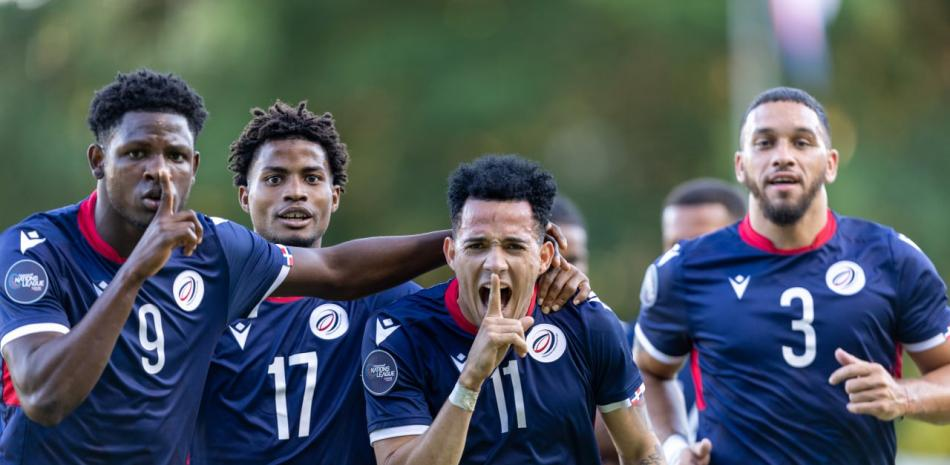
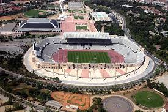
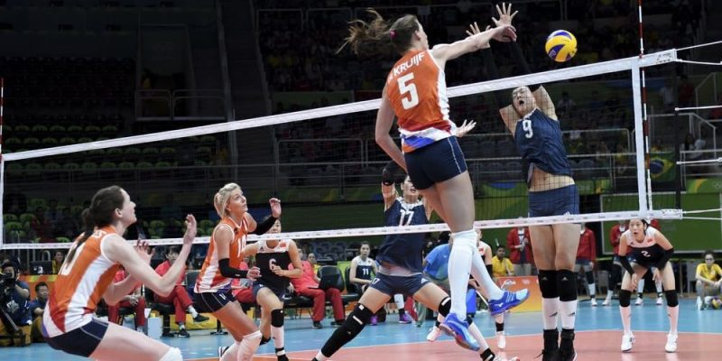
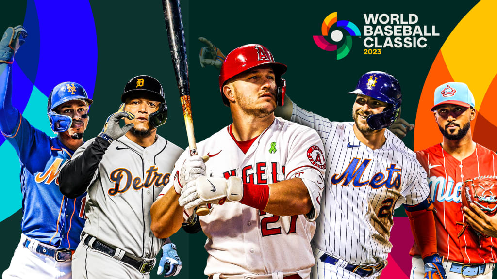

SANTO DOMINGO La euforia se apoderó de la República Dominicana anoche, tras la clasificación histórica de
la Selección Nacional de Fútbol Sub-26 al Campeonato Preolímpico de la CONCACAF. La victoria de 2 a 1
sobre su similar de Cuba selló el boleto del equipo y desató celebraciones masivas en todo el país. El
partido decisivo, jugado en el Estadio Olímpico Félix Sánchez, culminó con el pitazo final a las 10:45
p.m., momento en que miles de aficionados en el estadio y millones frente a sus pantallas estallaron en
júbilo.

El joven capitán del equipo, Erick Peña, se convirtió en el héroe de la noche al anotar los 2 goles que
aseguraron la victoria: el primero a los 35 minutos mediante un remate de cabeza y el gol de la
clasificación, un espectacular tiro libre, a los 78 minutos.
Las calles de Santo Domingo y otras ciudades principales se llenaron de seguidores ondeando banderas
dominicanas, tocando bocinas y cantando canciones patrióticas. En el Malecón, cientos de personas se
congregaron para celebrar, mientras que en los barrios populares, las festividades continuaron hasta
altas
horas de la noche.
Calles Tomadas por la Celebración
Inmediatamente después del triunfo, las principales avenidas de las ciudades se llenaron de
vehículos y personas ondeando la bandera dominicana.
Focos de Fiesta: Los mayores puntos de concentración fueron la Avenida Duarte en Santo
Domingo, el Monumento a los Héroes en Santiago y la Calle del Sol en Puerto Plata.
Cánticos y Música: El sonido de las bocinas, los tambores y los cánticos de apoyo al equipo
dominicano se extendieron hasta bien entrada la madrugada.
Declaraciones de Autoridades: El presidente de la República, en un mensaje televisado,
felicitó al cuerpo técnico y a los jugadores, catalogando este logro como "un hito que marcará el
futuro del fútbol dominicano y un orgullo para la nación".
Inauguración de nuevas instalaciones deportivas en Santo Domingo
SANTO DOMINGO En un esfuerzo por promover el deporte y la actividad física entre los ciudadanos, el
gobierno dominicano inauguró ayer nuevas instalaciones deportivas en la capital. El complejo, ubicado en
el sector de Los Prados, cuenta con canchas de baloncesto, fútbol, voleibol y una pista de atletismo,
además de áreas recreativas y gimnasios al aire libre.

La ceremonia de inauguración contó con la presencia del Ministro de Deportes, atletas destacados y
miembros de la comunidad local. Durante su discurso, el ministro destacó la importancia de fomentar un
estilo de vida saludable y brindar a los jóvenes espacios adecuados para practicar deportes.
Las nuevas instalaciones estarán abiertas al público de manera gratuita y se espera que se conviertan en
un punto de encuentro para deportistas aficionados y profesionales por igual. Además, se planean
organizar eventos deportivos y programas de entrenamiento para diferentes disciplinas en el futuro
cercano.
Pistas de Atletismo: Se renovó por completo la pista de atletismo del [Mencionar un Parque,
ej: Parque del Este], utilizando material sintético homologado.
Cancha de Baloncesto: La nueva cancha de baloncesto cuenta con iluminación LED para permitir
juegos nocturnos y gradas para espectadores.
Gimnasios Abiertos: Se instalaron 5 gimnasios al aire libre con equipos de calistenia y
fitness en parques vecinales.
Dominicana sede del próximo torneo regional de voleibol
SANTO DOMINGO La República Dominicana ha sido seleccionada como la sede del próximo torneo regional de
voleibol, que se llevará a cabo en noviembre de este año. El evento reunirá a equipos de varios países
del Caribe y América Latina, y se espera que atraiga a miles de aficionados al deporte.

El torneo se celebrará en el Polideportivo de la Ciudad Deportiva, que ha sido renovado recientemente para
cumplir con los estándares internacionales. La Federación Dominicana de Voleibol (FEDOVOLI) ha estado
trabajando en estrecha colaboración con la Confederación de Voleibol de Norte, Centroamérica y el Caribe
(NORCECA) para garantizar el éxito del evento.
Se espera que el torneo no solo promueva el voleibol en la región, sino que también impulse el turismo y
la economía local. Los organizadores han anunciado una serie de actividades paralelas, incluyendo
clínicas de entrenamiento, exhibiciones y eventos culturales para los visitantes.
Equipos Participantes: Se espera la participación de al menos 8 equipos nacionales, incluyendo
Jamaica, Puerto Rico, México y Cuba.
Calendario del Evento: El torneo se desarrollará del 10 al 20 de noviembre, con partidos
diarios y una ceremonia de clausura especial.
Entradas y Alojamiento: Las entradas estarán disponibles a partir del próximo mes, y se han
negociado tarifas especiales en hoteles locales para los visitantes.
La Serie Mundial de Béisbol de 2025 ha comenzado con gran emoción y expectativas. Los equipos
contendientes, los Atlanta Braves y los Houston Astros, se enfrentan en una serie al mejor de siete
juegos para determinar al campeón de la Major League Baseball (MLB) de este año.

El primer juego de la serie se llevó a cabo en el Truist Park en Atlanta, donde los Braves lograron una victoria
emocionante en las últimas entradas. Los Astros, por su parte, están decididos a defender su título y
han demostrado ser un equipo formidable durante toda la temporada.
Los fanáticos de ambos equipos han llenado los estadios y las redes sociales con entusiasmo, creando un
ambiente vibrante para la Serie Mundial. Los jugadores clave, como Ronald Acuña Jr. de los Braves y
José Altuve de los Astros, están listos para dejar su huella en la historia del béisbol.
Calendario de Juegos: El segundo juego se llevará a cabo en Houston, seguido por juegos alternos en Atlanta y Houston hasta que un equipo gane cuatro juegos.
Jugadores Destacados: Además de Acuña y Altuve, otros jugadores a seguir incluyen a Ozzie Albies de los Braves y Yordan Álvarez de los Astros.
Impacto Cultural: La Serie Mundial no solo es un evento deportivo, sino también una celebración de la cultura del béisbol en Estados Unidos y en todo el mundo.